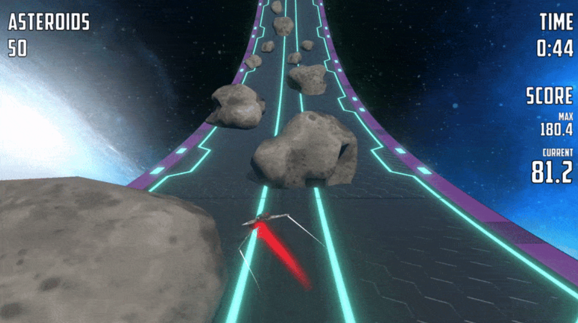

Test Project
Skyroads
Test project delivered in 3 days with clean architecture and complete task requirements.
- Role
- Gameplay & Systems Programmer
- Timeline
- 3 days
- Team Size
- Solo

Project highlight
- Drove the entire loop through a single global state machine with one tick path, so every frame is fully ordered and easy to reason about when debugging gameplay flow.
- Wired the machine through a custom service locator instead of a heavy DI framework—deliberately lightweight, but still demonstrating I can stand up a small composition root quickly when the brief calls for it.
What I built
- Implemented required gameplay functionality for test scope.
- Maintained clean and readable project architecture.
- Provided project summary via README.
Challenges
- To improve visual quality, I added a road-bending effect. This introduced rendering artifacts, which I fixed by manually increasing the object rendering bounds size.
Results & impact
- Delivered complete test project in 3 days.